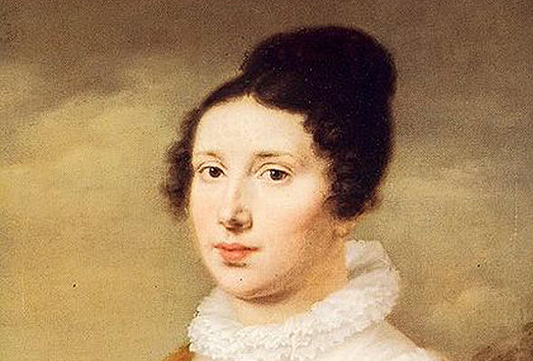
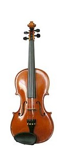
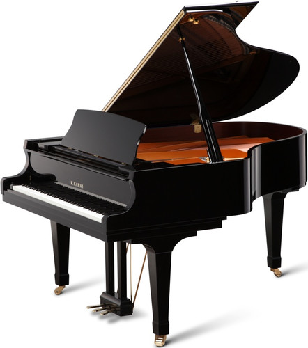

Witaj na stronie całkowicie oddanej tematowi muzyki klasycznej. Znajdziesz tu fascynujące informacje odnośnie
tego typu muzyki: instrumenty, formy muzyczne, najważniejsi twórcy i ich dzieła, budowa orkiestry symfonicznej
i wiele innych rzeczy. Muzyka klasyczna jest wielokrotnie uznawana za osiemnastowieczny Rock'n'Roll. Mimo że od
zakończenia okresu popularności mineło tyle czasu, to jest chętnie słuchana przez dzisiejszych słuchaczy. Sam
spróbuj i zobacz, że muzyka klasyczna da się polubić, a nawet odmieni Ciebie na dobre.
Kim była Eliza?
Biografowie Beethovena nie są zgodni co do tego, kim była tytułowa Eliza. Według jednej z teorii, oryginalny tytuł brzmiał "Für Therese", Według innej teorii Elizą była sopranistka Elisabeth Röckel. Inna wersja mówi, że Eliza była słynną "Nieśmiertelną Ukochaną" Kiedy kompozycję opublikowano w 1865 r., jej odkrywca Ludwig Nohl nadał jej tytuł "Dla Elizy", pod którym znana jest do dziś.

Kto zbudował piewrsze skrzypce?
Pierwsze udokumentowane czterostrunowe skrzypce skonstruował w roku 1555 Andrea Amati. Poprzednie instrumenty miały trzy struny i nazywane były violetta. Skrzypce natychmiast zdobyły popularność, zarówno wśród ulicznych grajków, jak i pośród osób wysoko urodzonych.

Ile klawiszy ma fortepian?
88. Rozpiętość 7 i ¼ oktawy jest standardem dla współczesnych fortepianów, podobnie jak i pianin. Większą rozpiętość skali posiadają jedynie organy (do 10 oktaw – tyle rozróżnia słuch ludzki).

,,Od muzyki piękniejsza jest tylko cisza"?
Powiedział te słowa Ludwig van Beethoven. Można było się tak naprawdę domyślić - cisza towarzyszyła mu bardzo długo.